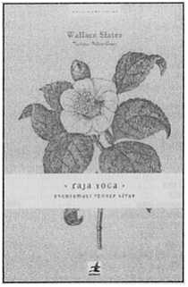

Doğuda öğretilen ve uygulanan yoga türleri arasında Raja Yoga bu disiplinlerin kralı olarak kabul edilir. Amaç, kişinin kapasitesini sonuna kadar geliştirmek ve iç ruhsal özünü açığa çıkarmaktır. Bu kitapta yazar eski zamanlardan kalma
bu klasik yoga sisteminin temel tekniklerini, okuyucunun 'kendi kendine uygulayabileceği' on derste, kademeli olarak göstermektedir.
Dersler duruşları, nefes almayı, doğru tutumu ve en önemlisi meditasyon yöntemlerini içermektedir. Bu uygulamalı rehber kitap, günlük hayatın karmaşası ve koşuşturması arasında öğrencinin kendi iç sessizliğini bulmasına, yeni içgörüleri keşfetmesine ve kendisini bütün bir insan olarak gerçekleştirmesine yardımcı olacaktır.